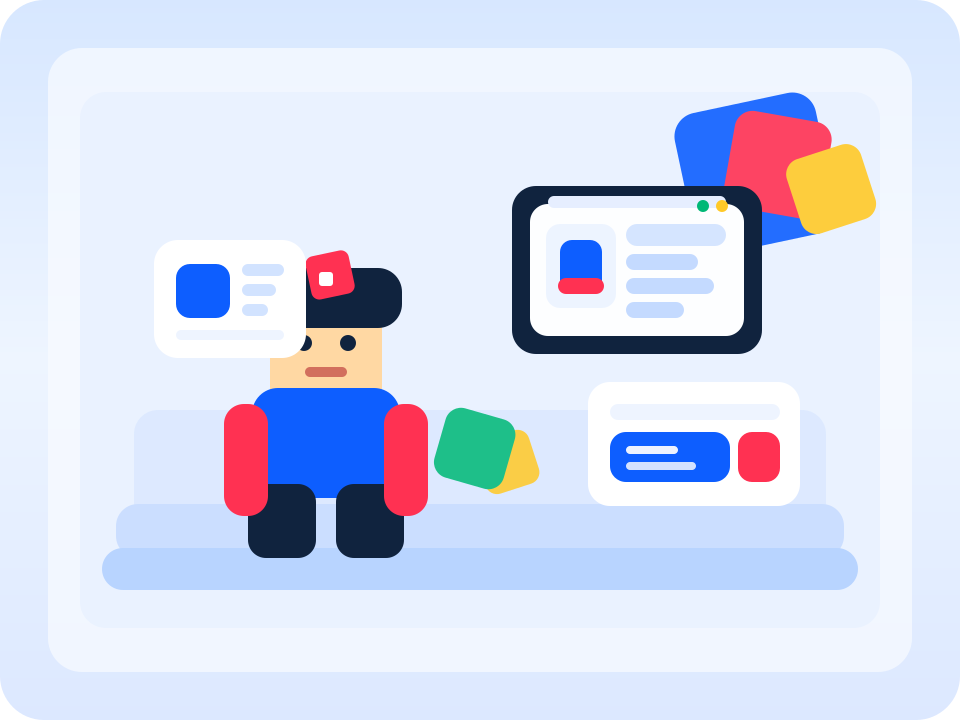
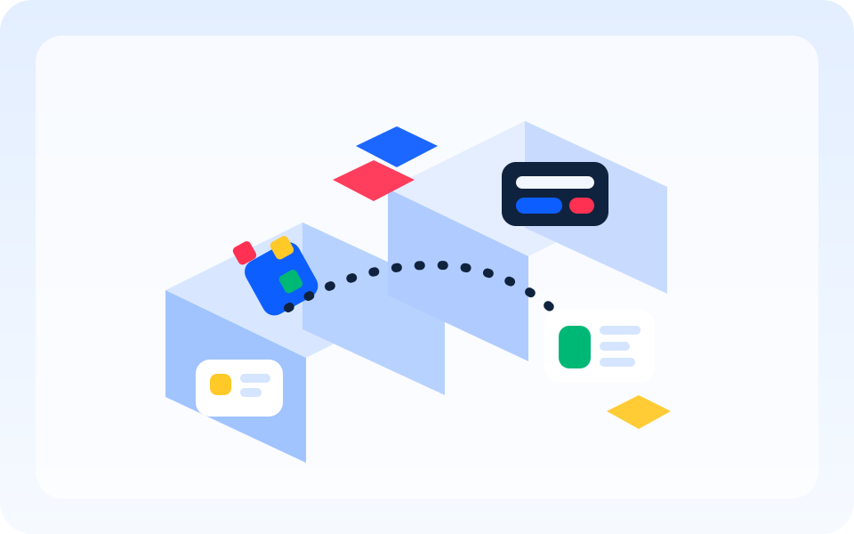

Your world is growing, but your monetization loop is slipping.
Make one focused money pass: refresh the starter offer, test two high-performing products upward, and move the first purchase prompt deeper into the first session.
Blocboard gives your team one weekly plan for what to fix, what to price-test, what to rerun, and what is still stuck in review, so your next update ships with more confidence and more upside.
Make one focused money pass: refresh the starter offer, test two high-performing products upward, and move the first purchase prompt deeper into the first session.
Strong store conversion means the egg probably feels underpriced to players who already want it.
Trim the event setup so more players hit the first reward loop before they bounce out.

Maya is the producer. Leo handles the economy. Priya runs live ops. Ken leads the studio. None of them need more charts. They need one shared plan before the week gets away from them.
Maya, producer
Maya sees DAU climbing and revenue slipping. She has files from Roblox, comments in Slack, and a half-finished note from last Friday, but no clean answer to what deserves the team's next hour.
Leo, economy designer
Leo wants to test one price up, one price down, and kill a stale bundle. He knows all three matter. What he does not know yet is which one should ship first and which one can wait another week.
Priya, live-ops producer
Priya wants to rerun the event with fewer entry steps. Maya wants onboarding fixed first. Leo wants the starter offer repriced. Blocboard pulls the leak, the unfinished items from last week, and the past wins into one plan before the room turns noisy.
Ken, studio lead
Ken does not need another dashboard screenshot. He needs a decision. The studio ships one price test, one event tweak, and one retention fix, with each person already aligned on what happens next week if the metric moves.
Maya is not chasing context across files. Leo is not arguing for three tests at once. Priya is not reopening last week's debate from memory. Ken is not asking for another dashboard screenshot. Blocboard has not replaced Roblox's tools. It has changed how this studio makes decisions.
Walks into review with one ranked plan instead of five open tabs.
Ships one higher-conviction price test because the plan made the tradeoff obvious and tied it back to revenue.
Reruns the event with a shorter entry path and keeps the unfinished items visible so more players reach the return loop.
Gets a cleaner Friday change list and a clearer answer to what happens next week if revenue lifts or activity slips.
Not because another dashboard showed up. Because the week got clearer, the revenue calls got sharper, and the game stayed more active.
Producer
Economy lead
Studio lead
Teams stop running random bundle tweaks and start pushing the one money move that best deserves the week.
Live ops changes stop fighting monetization changes, which makes it easier to keep sessions active and give players a reason to come back.
The room stops reopening last week's argument from memory and starts working from one ranked plan with clear owners.
The hard part is not finding another chart. The hard part is knowing what deserves the next hour from your producer, economy designer, gameplay designer, or scripter before Friday hits.
Finds the offers that look cheap, stale, buried, or badly packaged before they quietly drag down your week.
Surfaces where players bounce, where acquisition leaks, and where DAU growth is not turning into money.
Turns event results into clear next moves so the answer is not just “run another weekend event and hope.”
Gives the team a real shipping list with clear names on it instead of a report everyone agrees with and nobody closes.
Keeps last week's approvals, deferrals, and in-flight work visible so the team does not restart the same conversation every Friday.
Pulls past experiments back into the room so you keep stacking what worked instead of rediscovering the same fix twice.
Shows where your game is actually behind similar games, not just down from last week, so the team can feel the real urgency.
Roblox gives you dashboards and buttons. Blocboard gives you the weekly game plan that turns files, built-in actions, shipped learnings, and open reviews into one clear plan.
Blocboard is designed for the moment when charts stop helping and the team needs a call: what to fix, what to test, what to defer, and who owns each move.
Pull Creator Dashboard files, product stats, and recent event performance into CSV.
Rank the biggest leaks, missed opportunities, and unfinished items from last week before the room gets noisy.
Walk into review with one plan, clear names on each change, and enough context to make decisions fast.
Push changes through Creator Dashboard, internal tooling, or Studio without losing the weekly thread.

The five-minute version your lead can scan before the meeting starts.
The polished share-out for review, next-week planning, and “here's the plan” moments.
Ready-to-review revenue moves for pricing, packaging, and store cleanup.
Patch-ready changes for onboarding, event entry, and return hooks.
A real review list with names, risk, due windows, and what is still open.
One game plan your team or tooling can pass around without losing the plot.
The history view that reminds the team which fixes already earned their keep.
A simple file that keeps next week's plan from starting cold.
Every plan starts with the same core promise: clearer weekly decisions, fewer dropped learnings, and a faster path from review call to the ship list.
Pricing changes, starter offers, and store cleanup stop competing with everything else in the room and start getting ranked like real money decisions.
Event timing, entry friction, and return hooks stay visible next to monetization and retention, so player activity does not drift while the team chases revenue.
Producers, economy designers, and studio leads get outputs they can actually review, assign, ship, and learn from without reopening the same Friday argument next week.
Roblox studios with live experiences, weekly updates, and enough traffic that pass pricing, retention, and event tuning actually move revenue.
The best fit is any live game with repeat sessions and a meaningful economy: simulators, tycoons, obbies with paid items, battlers, collection events, and UGC-heavy experiences.
You should use them. Blocboard is not a replacement for Roblox's official dashboards. It sits above those tools and turns files, built-in actions, past experiments, and game-to-game comparisons into one weekly game plan for the studio.
Right now it reads CSV files, finds problems, pulls in past test results, keeps track of open decisions from last week, and gives the team a change list they can review. Direct Dashboard writes and Studio plugin sync are still next.
No. It shortens the weekly review work so the human lead can spend more time shipping and less time hunting for weak spots.
The repo already includes a working first version, demo inputs, generated outputs, and tests. Use this section to turn interest into a real conversation with studios who want clearer weekly decisions, faster reviews, and fewer lost learnings between ships.